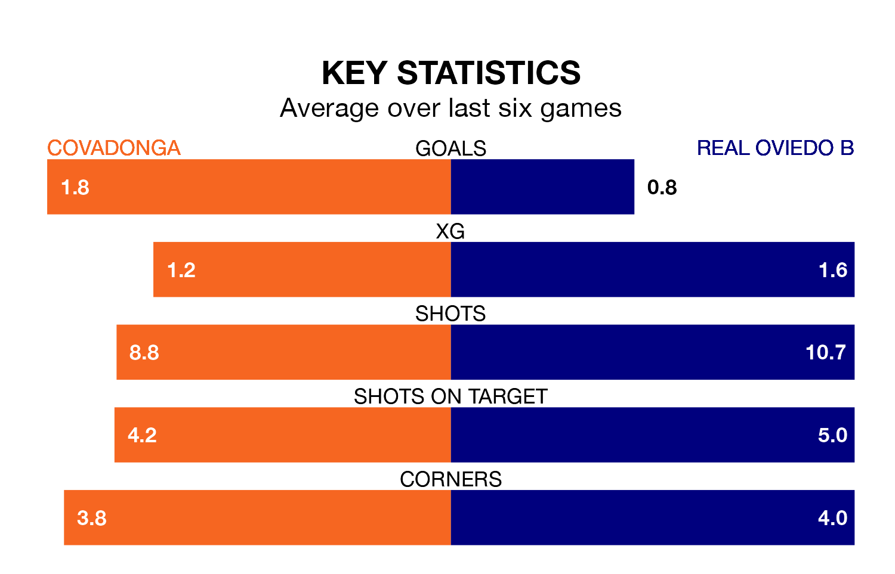

Sunday's match at the Estadio Juan Antonio A. Rabanal sees two relegation candidates play each other, as 17th-ranked Covadonga host 15th-placed Real Oviedo B.
Covadonga have picked up 26 points from their first 26 Segunda División RFEF Group 1 games, with six wins and eight draws.
That is four points less than Oviedo B have collected, having won six and drawn 12.
Covadonga are in mixed form in the Segunda División RFEF Group 1, with two wins and a draw from their last six games.
With no wins and two draws over that period, Oviedo B's form is worse – they have taken two points from 18, compared to the hosts' seven.
With 26 goals in 30 games so far this season, the away team are the league's third-lowest scorers with 0.9 goals per game. And they are conceding more than average, letting in 37 goals at a rate of 1.2 per game.
Covadonga, meanwhile, are average scorers, with 1.1 goals per game. They have conceded 1.7 goals per game.
In the last five years, Covadonga and Oviedo B have played each other on five occasions. Covadonga won one of them and Oviedo B the other.
On average, Covadonga scored 1.0 goal and Oviedo B 2.8 in those matches.
Their last meeting was on December 2, when Oviedo B won 5-0 at home.
Covadonga's last match was on April 7, a 2-0 loss against Pontevedra CF.
Oviedo B lost 1-0 against Arandina CF last time out, also on April 7.
Updated: 10:01 (UTC), 12/04/24